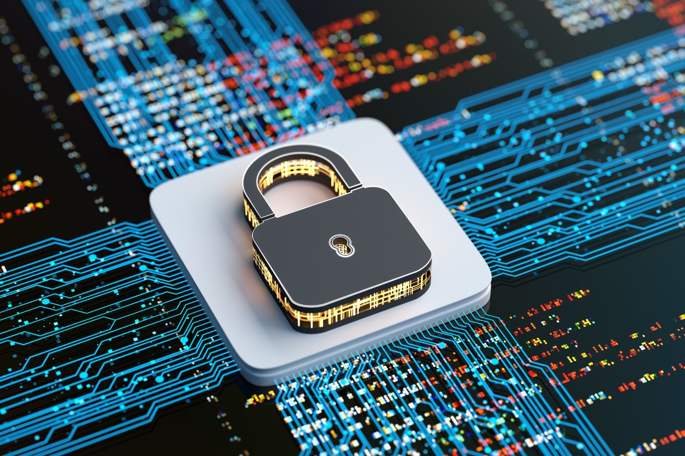

A proteção contra ataques cibernéticos é fundamental para manter a integridade e a segurança dos sistemas de informação. Esses ataques podem variar desde tentativas de sobrecarregar um servidor com tráfego excessivo, como nos ataques DDoS, até a introdução de malware que compromete dados e sistemas. Para se defender eficazmente, é crucial implementar medidas de segurança robustas, incluindo firewalls que bloqueiam tráfego indesejado, sistemas de detecção de intrusões (IDS) que monitoram atividades suspeitas, e soluções de antivírus que identificam e removem ameaças conhecidas.
Além disso, a educação contínua dos usuários desempenha um papel vital na proteção contra ataques. Treinamentos sobre como reconhecer e evitar e-mails de phishing e outras tentativas de engenharia social podem reduzir significativamente o risco de comprometer sistemas. Manter todos os sistemas atualizados com os patches mais recentes também ajuda a corrigir vulnerabilidades conhecidas, minimizando as chances de exploração por atacantes. Adotar uma abordagem em camadas para a segurança, combinando várias tecnologias e práticas, oferece uma defesa mais completa e eficaz.